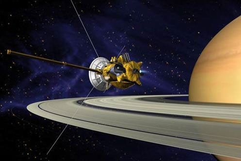

Saturn
Overview
Saturn is the sixth planet from the Sun and the second-largest in the Solar System, known for its magnificent ring system. This gas giant is composed primarily of hydrogen and helium and has over 140 moons, including the largest—Titan. Saturn’s low density means it would float if placed in a large enough body of water.

Saturn and its rings during equinox
Physical Characteristics
- Diameter: About 120,536 km (about 9.5 times Earth's diameter)
- Mass: 5.683 × 1026 kg (95 times Earth's mass)
- Atmosphere: Hydrogen, helium, with trace methane, ammonia, and water vapor
- Rings: The most extensive and complex ring system in the Solar System
- Rotation: Fast; a day lasts about 10.7 hours
Chemical Composition
- Atmosphere: 96% hydrogen and 3% helium by volume
- Interior: Dense core of rock and ice, surrounded by metallic hydrogen and molecular hydrogen
- Rings: Composed primarily of ice particles, with some rock and dust
Space Expeditions
- Pioneer 11 (1979): First spacecraft to fly past Saturn and study its rings and magnetic field
- Voyager 1 & 2 (1980–1981): Provided detailed images of the rings and discovered new moons
- Cassini–Huygens (2004–2017): Spent 13 years orbiting Saturn; studied the rings, atmosphere, and moons in detail
- Huygens Probe: Landed on Titan in 2005, sending back the first images from its surface

Cassini spacecraft approaching Saturn